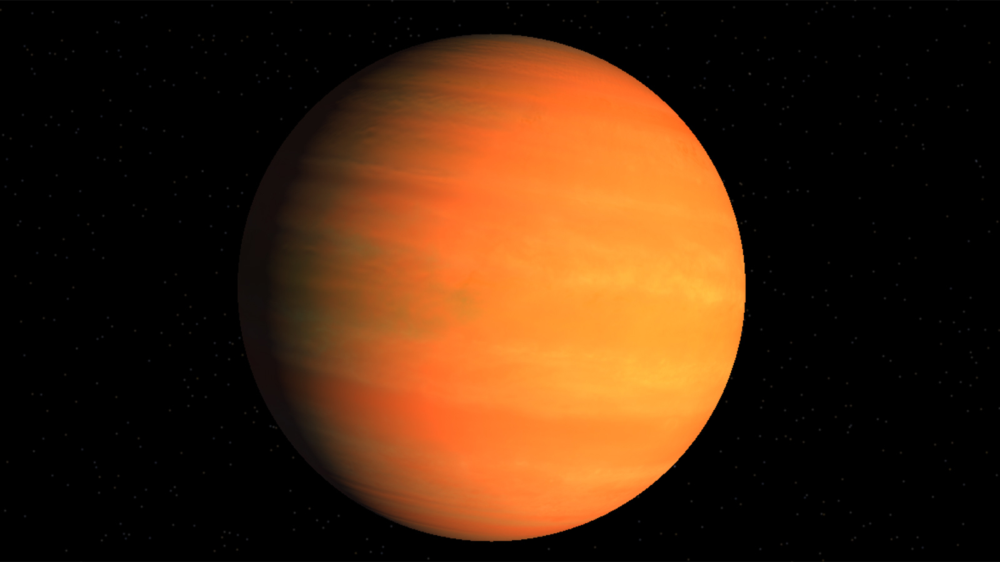

Kepler-16b is an extrasolar planet. It is a Saturn-mass planet consisting of half gas and half rock and ice, and it orbits a binary star, Kepler-16, with a period of 229 days. Kepler-16b was discovered using the space observatory aboard NASA's Kepler spacecraft. Scientists were able to detect Kepler-16b using the transit method, when they noticed the dimming of one of the system's stars even when the other was not eclipsing it. Furthermore, duration of transits and timing all the eclipses and transits of Kepler-16b and its stars in the system has allowed for unusually high precision in the calculations of the sizes and masses of objects in the Kepler-16 system.
 TWFkZSBieSBaYWNoIE0=